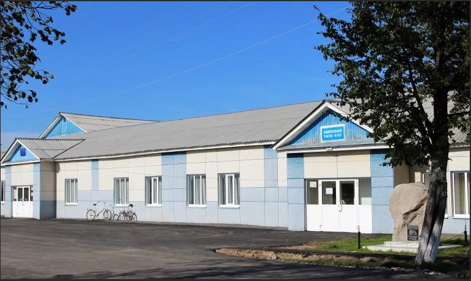
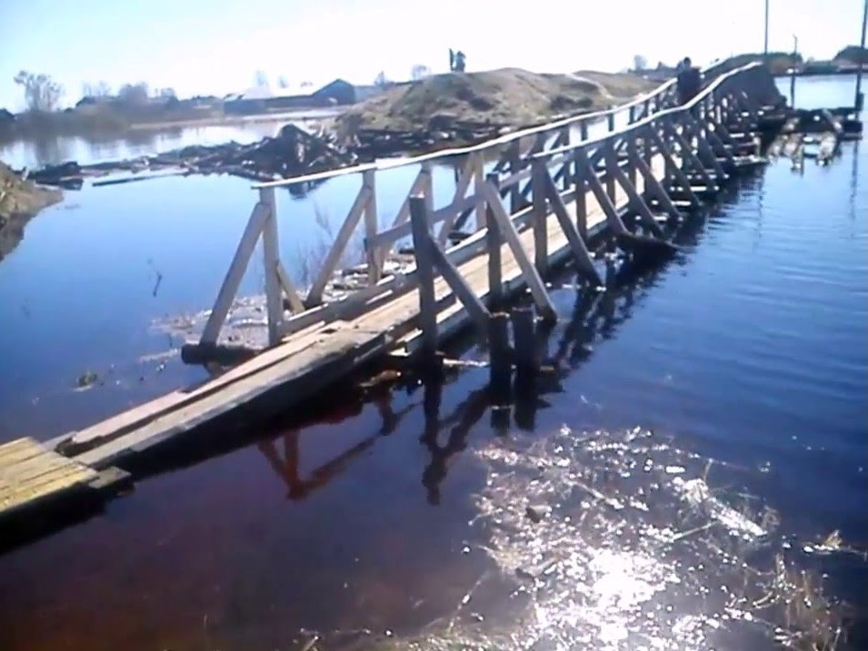

Истроия
Фабри́чное — посёлок в Туринском городском округе Свердловской области, России.
Вместе с близлежащими сельскими населенными пунктами образует Фабричное сельское управление Администрации Туринского городского округа.
Посёлок Фабричное Туринского городского округа расположен в 6
километрах к северо-востоку от города Туринска (по автотрассе — 7
километров), в лесной местности, на левом берегу реки Таборинка (левый приток
реки Тура). В окрестностях посёлка имеется гидрологический и ботанический
природный памятник — лечебный водоисточник

В 2016 произошло наводнение.

Численность населения
2002[3] 2010[1]
1307 ↘1083